![[stveit1]](stveit1.jpg)
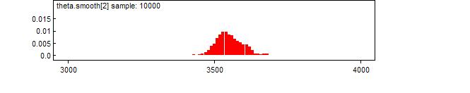
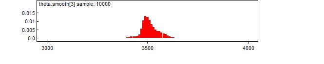
![[stveit4]](stveit4.jpg)
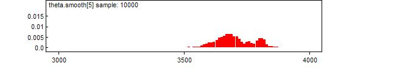
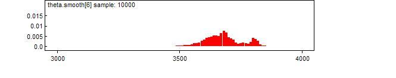
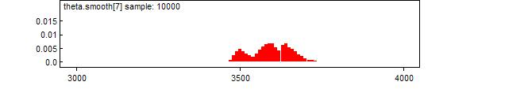
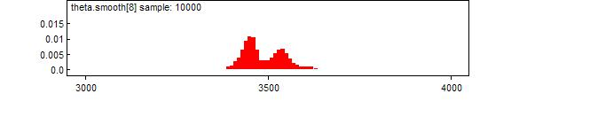
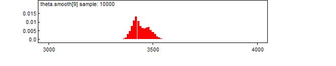
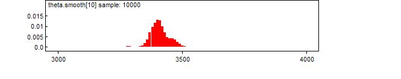
![[stveit11]](stveit11.jpg)
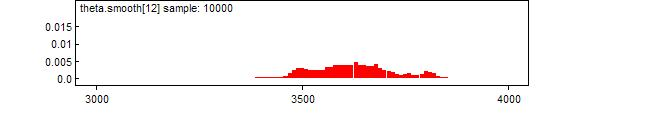
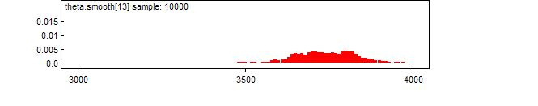
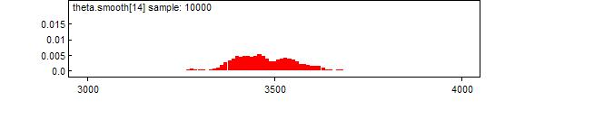
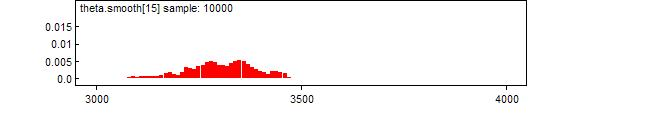
![[stveit16]](stveit16.jpg)
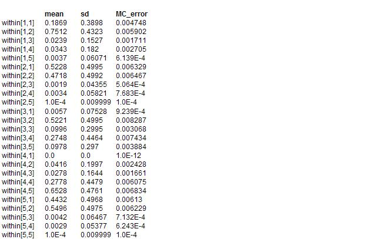
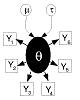 St Veit-Klinglberg, Austria -
Radiocarbon calibration with stratification
This example is from the book Buck CE, Cavanagh WG & Litton CD (1996)
Bayesian approach to interpreting archaeological data
. Wiley: Chichester p218-226
See also Buck CE, Litton CD & Shennan SJ (1994) A case study in combining radiocarbon and archaeological information: the Early Bronze Age settlement of St Veit-Klinglberg, Lan Salzburg, Austria.
Germania
2
427-447. The model was set up by Andrew Millard.
© Andrew Millard 2001
model{
theta[1] ~ dunif(theta[2], theta.max)
theta[2] ~ dunif(theta[3], theta[1])
theta[3] ~ dunif(theta[9], theta[2])
theta[4] ~ dunif(theta[9], theta.max)
theta[5] ~ dunif(theta[7], theta.max)
theta[6] ~ dunif(theta[7], theta.max)
theta[7] ~ dunif(theta[9], theta7max)
theta7max <- min(theta[5], theta[6])
theta[8] ~ dunif(theta[9], theta.max)
theta[9] ~ dunif(theta[10], theta9max)
theta9max <-min(min(theta[3], theta[4]), min(theta[7], theta[8]))
theta[10] ~ dunif(theta[11], theta[9])
theta[11] ~ dunif(0 ,theta[10])
bound[1] <- ranked(theta[1:8], 8)
bound[2] <- ranked(theta[1:8], 1)
bound[3] <- ranked(theta[9:11], 3)
bound[4] <- ranked(theta[9:11], 1)
for (j in 1 : 5){
theta[j + 11] ~ dunif(0, theta.max)
within[j, 1] <- 1 - step(bound[1] - theta[j + 11])
for (k in 2 : 4){
within[j, k] <- step(bound[k - 1] - theta[j + 11])
- step(bound[k] - theta[j + 11])
}
within[j, 5] <- step(bound[4] - theta[j + 11])
}
for (i in 1:nDate){
X[i] ~ dnorm(mu[i], tau[i])
tau[i] <- 1/pow(sigma[i],2)
mu[i] <- interp.lin(theta[i], calBP[], C14BP[])
# monitor the following variable to smooth density of theta
theta.smooth[i] <- 10 * round(theta[i] / 10)
}
}
Data
Radio Carbon Calibration Curve
( click to open )
Inits
( click to open )
Results